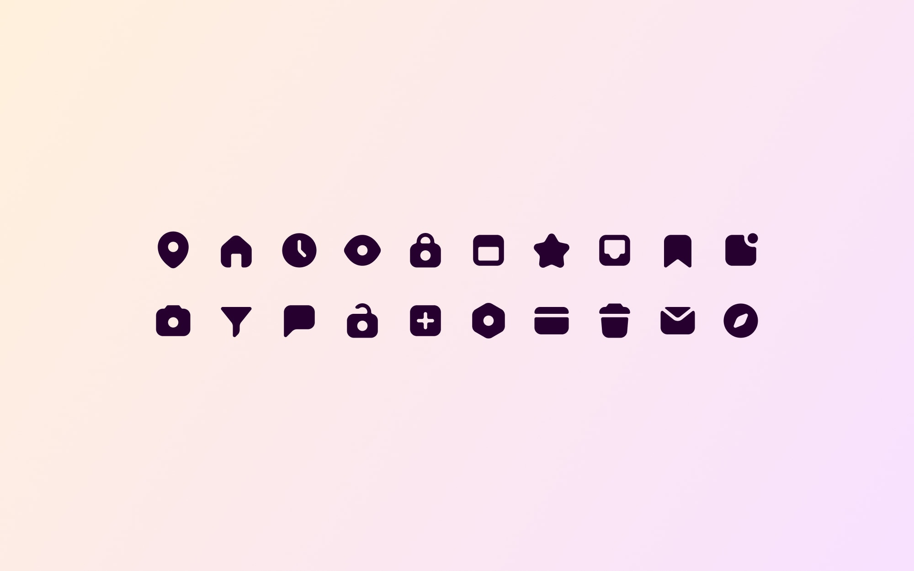
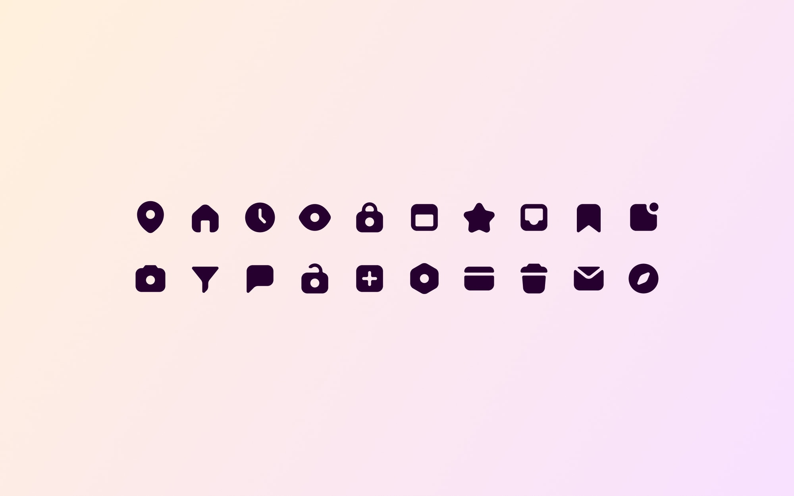
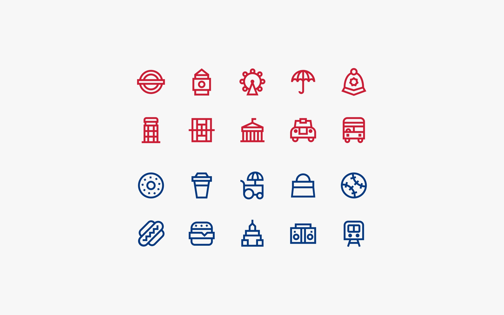
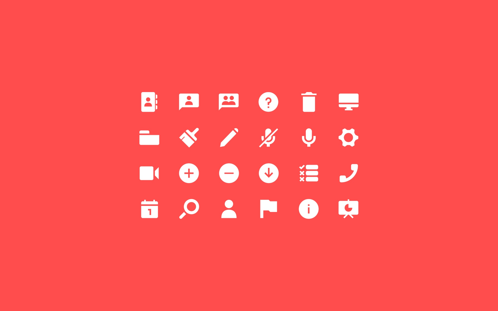

Selected work
 
20 minimal icons
A chunky set for UI use
Citysets
City-based icon sets
Webinar icons
Icons for a digital webinar product
Archery badges
Achievement badges for an archery product
Two-colour icons
Suite of icons for an insurance company